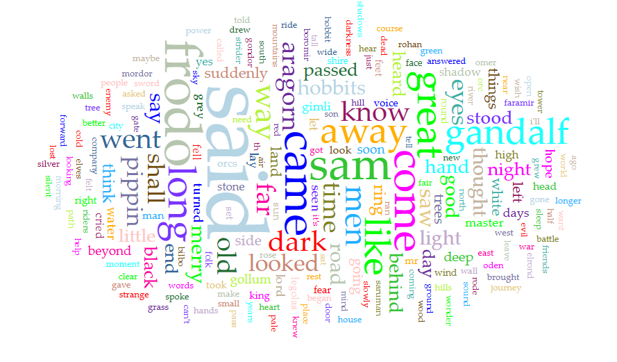

I have chosen to compare Lord of the Rings by Tolken with Dracula by Stolker. I think it would be neat to compare these two since they’re both works of fiction and have fantasy characters involved. I find it interesting that both Dracula and Lord of the Rings have a phrase they use frequently that’s very similar to one another. In Dracula they use I could not 68 times and in Lord of the Rings they use I do not 212 times.
LotR
Top 5
Average Words Per Sentence: 12.1
Most frequent words in the corpus:
said (4110); frodo (1860); came (1255); sam (1229); great (1195)
Most frequent phrases:
Out of the (392); there was a (291); i do not (212);

Dracula
Top 5 -
Average Words Per Sentence: 18.5
Most frequent words in the corpus:
said (570); shall (427); know (396); time (390); come (339)
Most frequent phrases:
I could see (73); i could not (68); dr van helsing (67);